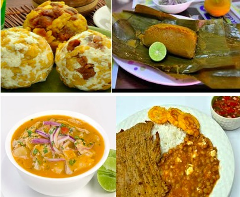
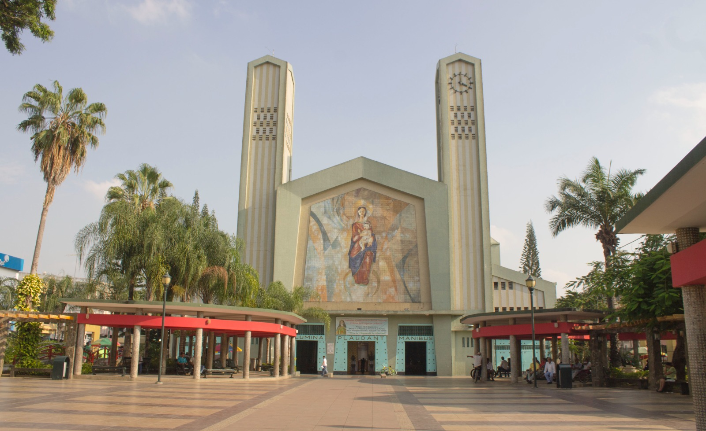

}
Costumbre
Costumbre
Las costumbres de la ciudad de Babahoyo reflejan la riqueza cultural y la identidad de su gente. Entre las más destacadas están las festividades religiosas, como las celebraciones en honor a Nuestra Señora de la Merced, su patrona, con procesiones, misas y actos culturales en septiembre. También son tradicionales los desfiles cívicos y estudiantiles durante las fiestas de independencia y cantonización.
Serenata

La serenata en la ciudad de Babahoyo es una expresión cultural y romántica que forma parte de sus tradiciones festivas. Se realiza especialmente en fechas importantes como el aniversario de cantonización o las fiestas patronales, donde artistas locales interpretan canciones típicas, baladas y música nacional en honor a la ciudad o a personajes destacados. También es común que se ofrezcan serenatas a las madres en su día o como muestra de afecto en celebraciones familiares. Estas presentaciones suelen llevarse a cabo en parques, plazas o frente a la Iglesia Matriz, creando un ambiente emotivo y lleno de orgullo local.

Los bolones de la ciudad de Babahoyo son uno de los desayunos más tradicionales y populares. Se elaboran con plátano verde cocido y machacado, al que se le da forma de bola y se mezcla con queso, chicharrón o ambos ingredientes, logrando un sabor salado y delicioso. Se suelen acompañar con café, huevo frito o carne asada. Este plato refleja la riqueza agrícola de la región y es una muestra de la gastronomía costeña, siendo muy apreciado tanto por los habitantes locales como por los visitantes que buscan un desayuno típico y lleno de energía.

Las *Casas de Olmedo* en la ciudad de *Babahoyo* son un importante patrimonio histórico y cultural del Ecuador. Se trata de un conjunto de estructuras coloniales ubicadas en la parroquia *Febres Cordero, donde vivió **José Joaquín de Olmedo*, uno de los próceres de la independencia y destacado poeta ecuatoriano. Estas casas, construidas con madera tradicional, conservan el estilo arquitectónico de la época y están rodeadas de naturaleza y caminos junto al río. Hoy en día, son un sitio turístico y educativo, donde se recuerda la vida y legado de Olmedo, así como la historia de la región fluminense.


El *Malecón 9 de Octubre* de la ciudad de *Babahoyo* es uno de los espacios públicos más representativos y visitados por locales y turistas. Se ubica a orillas del río Babahoyo y ofrece un entorno ideal para el paseo, la recreación y el disfrute familiar. Cuenta con áreas verdes, juegos infantiles, bancas, iluminación moderna y monumentos que resaltan la historia de la ciudad. Desde el malecón se pueden apreciar bellos paisajes fluviales y embarcaciones típicas. Es también un lugar clave para actos cívicos y eventos culturales, especialmente durante las fiestas de independencia del 9 de octubre.
